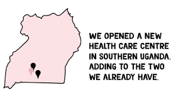

The foundation started it's operations in uganda in 2012.The foundation operates in different countries in the world and these are Uganda, Kenya, Zimbabwa, Malawi and Thailand. In Uganda Cotton on foundation is based in the southern part of Uganda and this region is has built various schools.
These schools are from all levels of education from day care to secondary.for example ST.Bernard senior secondary school
The foundatio has its roots in Australia the founder of the foundation is called MR. NEGEL
